2026-10-06 修改：畫面四角的樹葉拿掉了，畫面上不再放任何場景的東西（只剩血條這些介面）。豐富感改由場景本身撐：
廣場的石磚有不同石材，一條從北邊拱門經過王座到南邊的大石板路，王座外一圈太陽紋石，從王座往外燒黑的痕跡、劍的刮痕、被重擊碎裂的石板、
陣亡挑戰者留下的盾牌頭盔和骨頭；北邊廢墟和大樹的長影子斜斜壓進廣場；場地外圈每個角一組火盆、石頭、蕨類、長草、倒木、挑戰者的墳，
兩側有倒在草裡的老國王石像頭。會動的：地上穿過樹葉晃動的小光斑、植物隨風擺、飄落的葉子、白蛾、螢火蟲、火盆的細煙、會被主角嚇飛的烏鴉。
第二階段：火盆被 Boss 的火點燃、烏鴉全部飛走、飄落的變成灰燼，加上原本的變暗變紅、中央暗紅的光、滿場火星、旗子燒起來。
參考圖只拿來抓氛圍（森林裡的王城廢墟、穿過樹冠的暖色陽光、破紅旗、插在地上的斷劍、燒成灰的王座），場地是重新設計的打鬥場：
戰鬥區就是一個圓形石磚廣場，邊上一圈大塊的邊石剛好壓在角色走不出去的地方；高的東西（斷牆、拱門、柱子、旗竿、大樹）全在北邊的場地外，
角色永遠站在它們前面；南邊只有膝蓋高的東西；四根柱子位置、碰撞都沒動。紅色留給 Boss（旗子、血跡都是暗褐紅）。所有圖都是程式畫的，沒有從參考圖切任何東西。
和參考圖並排（構圖、物件都是自己設計的）
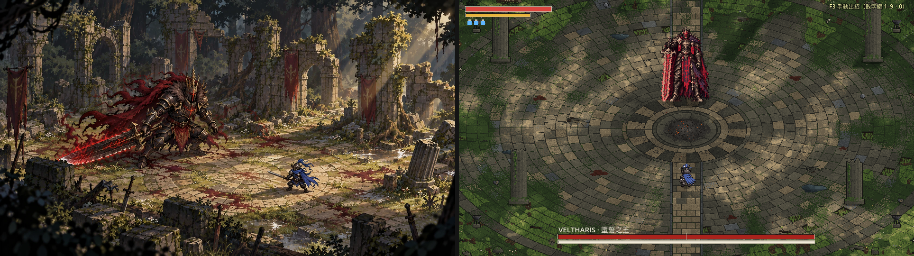
會動的東西（遊戲裡錄的，2 倍；鏡頭固定）
中央：地上的光斑慢慢晃、葉子飄下來
西北角：植物擺動、火盆冒細煙、白蛾、螢火蟲
主角走近，停在石頭和倒木上的烏鴉飛走
轉場：烏鴉一起飛走、火盆點燃、旗子燒起來
第二階段：燒著的火盆、飄落的灰燼
打一段（擬人機器人代打，2 倍）
第一階段
第二階段
遊戲畫面（1 倍；點開是 2 倍）
第一階段：中央

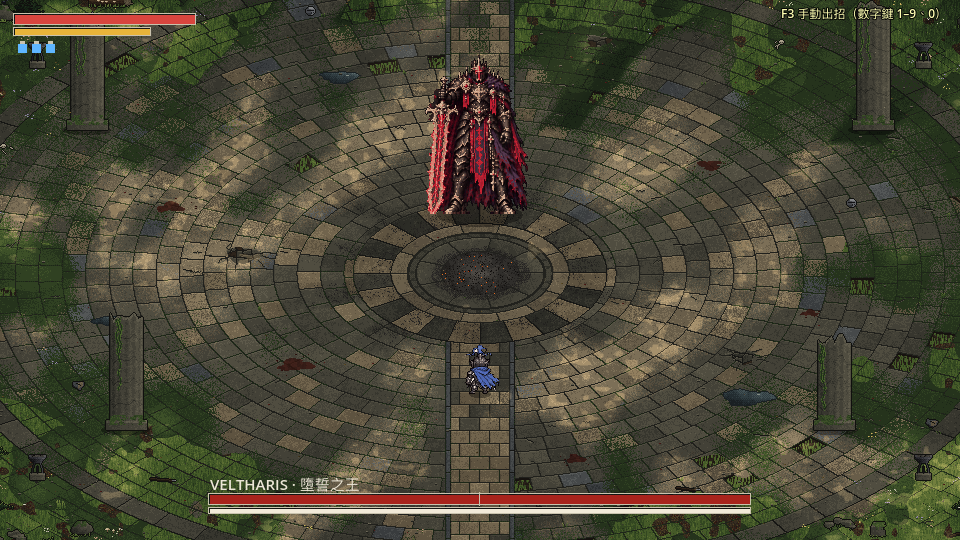
第二階段：中央

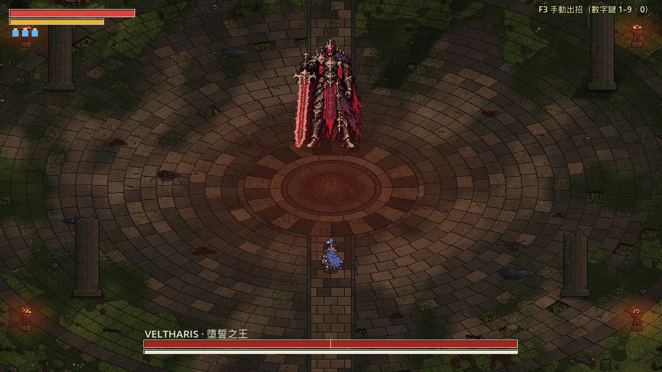
北邊（廢墟、旗子、樹林；廢墟的影子壓進廣場）

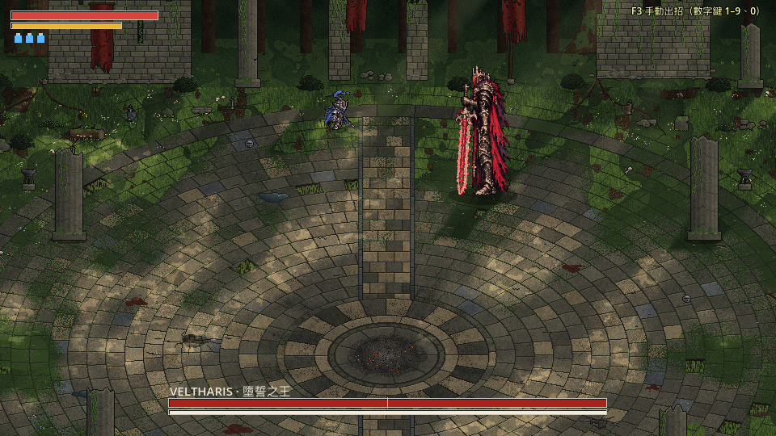
第二階段的北邊（旗子燒起來）

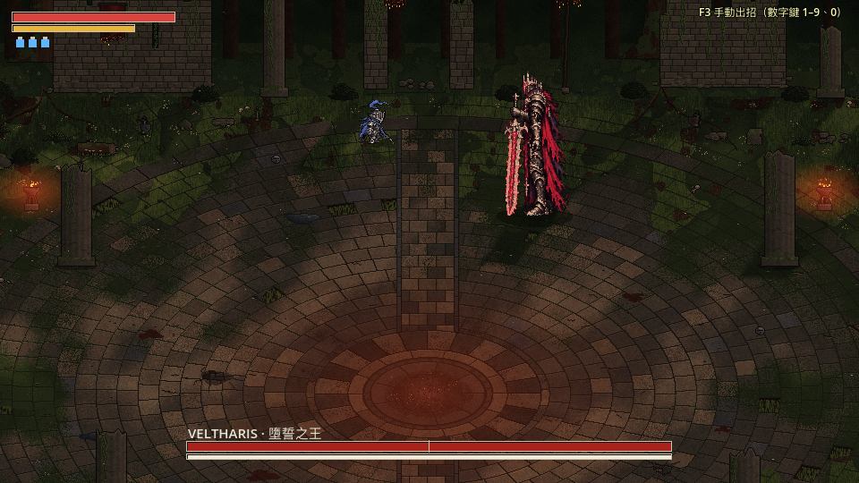
Boss 站在北邊緣

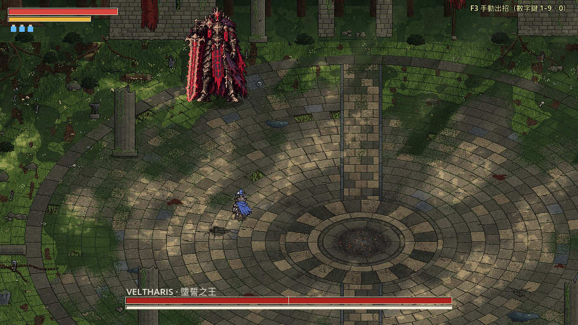
南邊緣

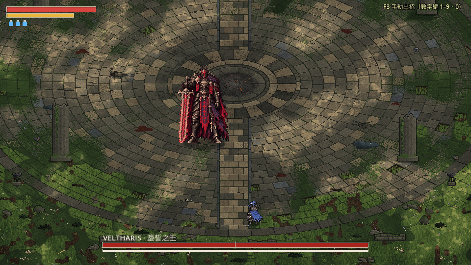
西邊緣

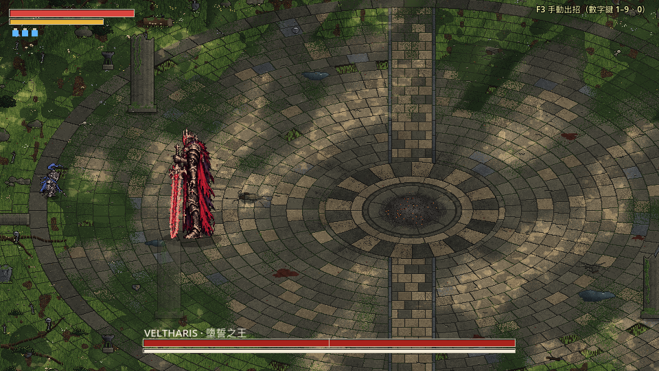
東邊緣

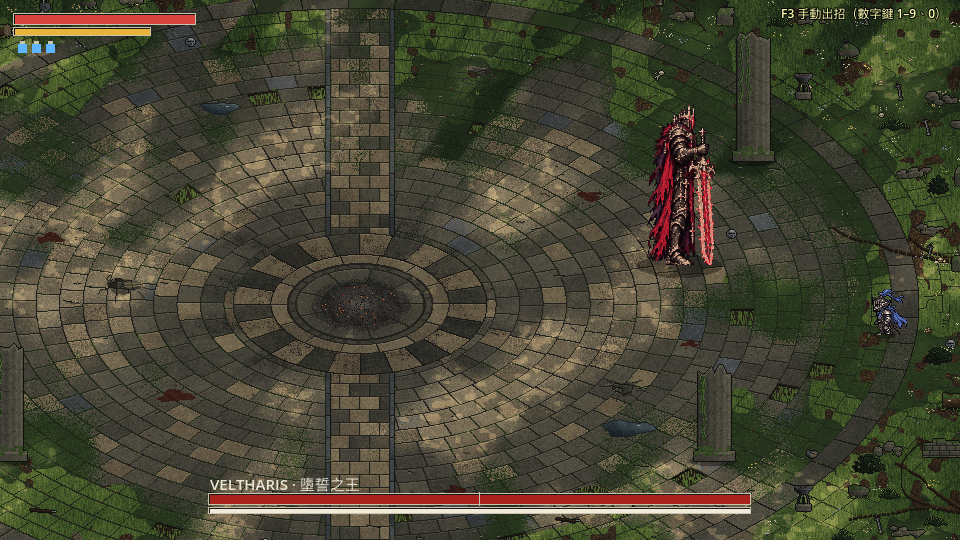
轉場時場景的變化
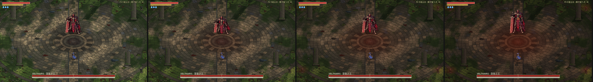
看得到的邊界＝走不出去的地方
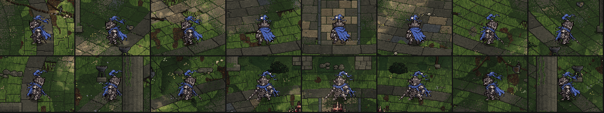
主角沿著場地邊緣 16 個位置，每一張都停在那一圈邊石上；兩側的碎石、斷劍都在邊石外面，不會在看起來空的地方被擋住。
鏡頭跑到最邊（不會露出空白；每個角一組火盆、石頭、蕨類、墳）


柱子
主角在柱子後面：柱子變半透明

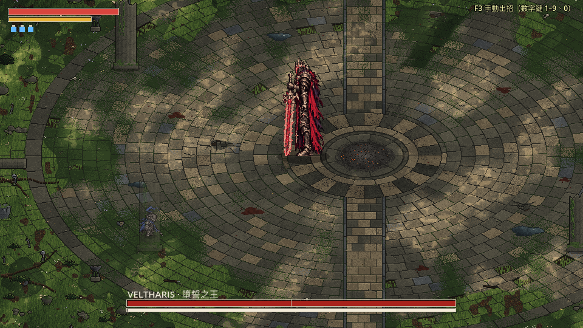
主角在柱子前面

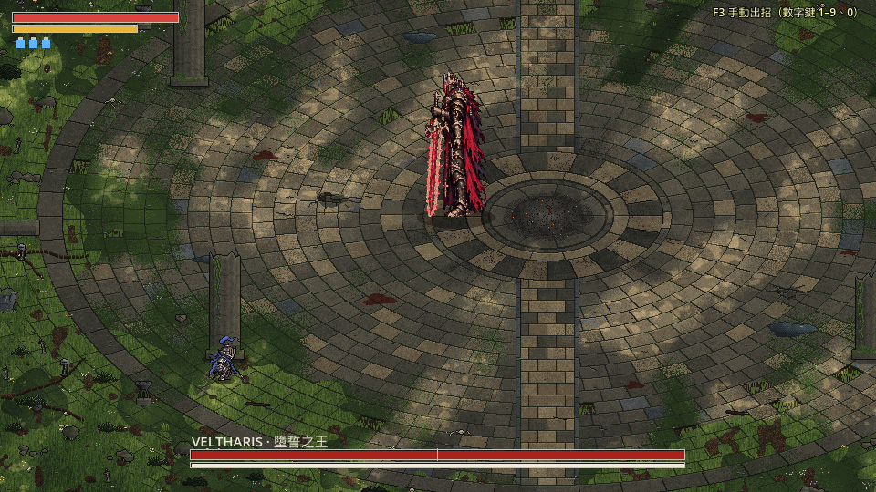
特效在新地面上看不看得清楚
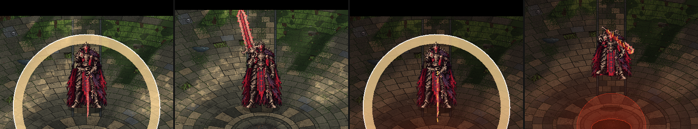
由左到右：白色衝擊環（第一階段）、延遲下劈劍上的預兆紅光、第二階段的雙重衝擊環、墜王之躍的紅色落點（第二階段）。